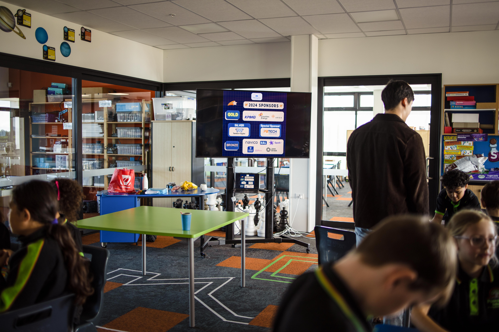

Become a Sponsor
Support Robogals by becoming a sponsor and help us inspire young girls to pursue a career in STEM. Your contributions make a big impact on our ability to reach more students and offer more workshops. Simply use the contact form or email auckland.partnerships@robogals.org
Contact Us